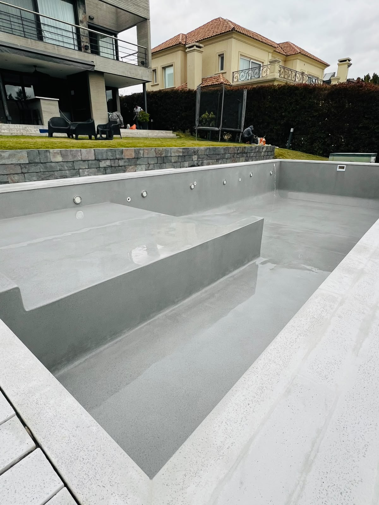
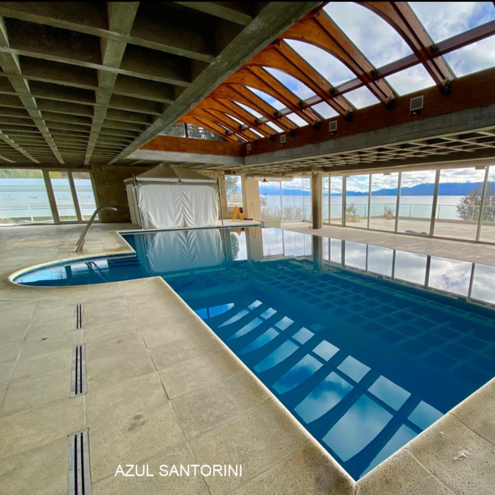
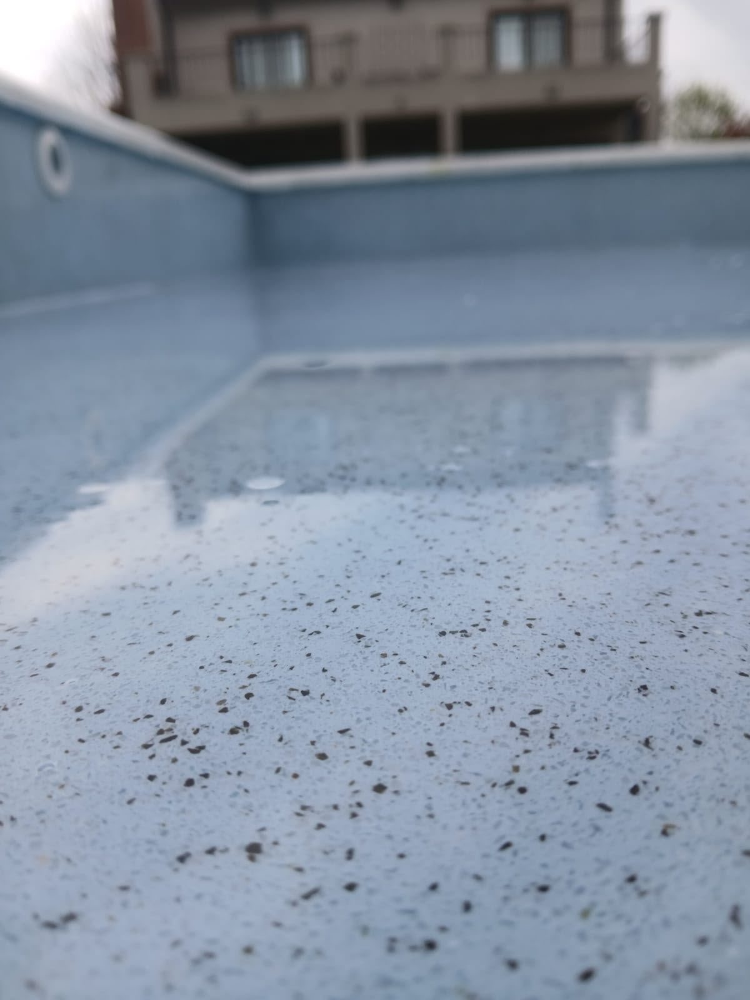

Z.R Piscinas
Revestimiento de mármol pulido para el interior de piscinas
Consultar Presupuesto¿Por qué elegir Z.R?
Larga Durabilidad
Materiales resistentes diseñados para el agua y el sol.
Fácil Aplicado
Técnica eficiente para renovar o construir tu piscina.
Sin Juntas
Superficie continua, suave al tacto y sin uniones molestas.
Mármol Pulido
Acabado estético y sofisticado de alta gama.
Nuestros Trabajos

Revestimiento celeste Cancún

Listo para el pulido

Detalle de terminación y pulido
Proceso de pulido y acabado
Transformá tu piscina hoy
Asesoramiento personalizado y presupuestos sin cargo
WhatsApp: 3487 589652